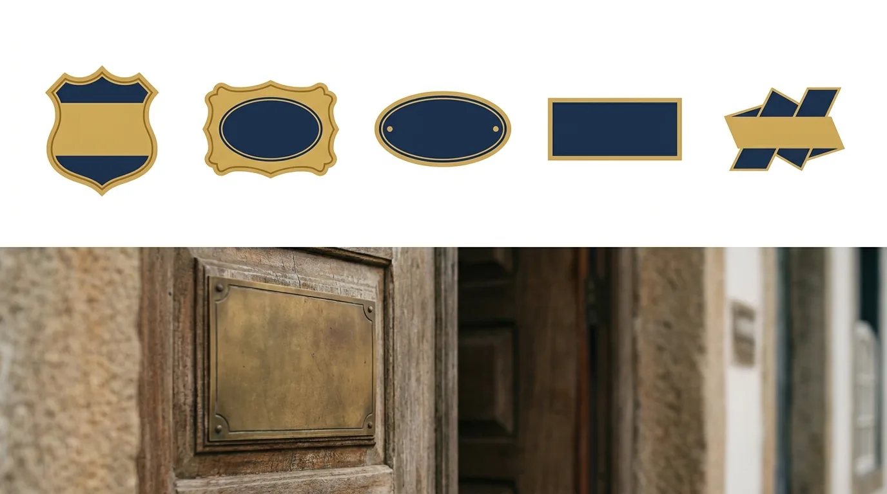

Nome para Escritório de Advocacia: Regras e Ideias
Batizar o escritório parece a parte fácil da empreitada, até a primeira reunião de sócios sobre o tema. Um quer sobriedade, outro quer modernidade, alguém sugere uma sigla, e no meio da discussão surge a dúvida que trava tudo: o que a OAB deixa? Pode nome de fantasia? Pode "& Associados" sem associado nenhum? Pode homenagear o sócio falecido?
A escolha do nome para escritório de advocacia é uma decisão dupla. De marca, porque o nome vai estampar site, placa, petições e memória de cliente por décadas; e regulatória, porque sociedade de advogados tem regras de denominação próprias, e nome fora do padrão não sai no registro do conselho.
Este guia resolve as duas camadas. Primeiro, o que as normas exigem e vedam e os caminhos criativos dentro da moldura; depois, os critérios de marca que separam nomes que ajudam de nomes que atrapalham e o checklist de verificação (OAB, domínio, marca, Google) antes de mandar fazer a placa.
O que as regras da advocacia exigem
A denominação de sociedade de advogados não é terra livre. O Estatuto da Advocacia (Lei 8.906/1994) e os provimentos do Conselho Federal desenham a moldura, e o registro no conselho seccional só sai para nomes dentro dela.
As regras centrais, na prática:
- O nome parte dos sócios. A razão social se forma com o nome, completo ou parcial, de um ou mais sócios advogados. É por isso que o padrão do mercado é "Sobrenome & Sobrenome Advogados" ou "Fulano de Tal Advocacia";
- Sociedade unipessoal tem fórmula própria. O titular solo registra com o próprio nome mais a expressão "Sociedade Individual de Advocacia";
- Indicação da natureza advocatícia. A denominação identifica que se trata de advocacia ("Advogados", "Advocacia", "Sociedade de Advogados"). Denominação de fantasia é vedada na razão social, assim como siglas e características mercantis, por força do próprio Estatuto (art. 16) e do Provimento 112/2006 do Conselho Federal;
- O sócio falecido pode permanecer. A tradição é protegida: previsto no ato constitutivo, o nome do sócio falecido pode ser mantido na razão social, o que explica as bancas centenárias com nomes de fundadores;
- Sem mercantilização no batismo. Nomes com apelo comercial agressivo, superlativos ou promessa embutida ("Vence Já Advogados") são barrados na origem pelo art. 16 do Estatuto e pelo Provimento 112/2006, e a camada de publicidade do Provimento 205/2021 completa o cerco.
O detalhe que muita gente descobre tarde: a verificação de disponibilidade na seccional. Assim como a Junta Comercial, o conselho não registra denominação idêntica ou muito semelhante à de sociedade já inscrita na mesma base territorial. O sobrenome comum que parecia perfeito pode já ter dono.
Atenção: as regras acima valem para a razão social registrada. A identidade de comunicação (logotipo, abreviações visuais, o jeito como o nome aparece no Instagram) tem alguma flexibilidade a mais, mas nunca pode contrariar a essência: identificação verdadeira, sem fantasia enganosa e sem mercantilização. Na dúvida entre o criativo e o registrável, consulte a seccional antes de investir em marca.
Antes de abrir o cardápio, um esclarecimento de escopo: as regras acima valem para a advocacia e suas sociedades. Marcas de negócios paralelos legítimos (uma editora jurídica, um curso, um podcast) seguem o regime comum de marcas e podem ter a criatividade que a razão social não comporta, desde que não sirvam de fachada para captar clientela advocatícia por vias vedadas. Muitos advogados constroem ecossistemas assim: a banca com o nome dentro das regras, e os projetos de conteúdo com identidade própria, cada coisa no seu registro.
Os caminhos possíveis (e o que cada um comunica)
Dentro da moldura, a escolha do nome para escritório de advocacia tem mais espaço criativo do que parece. Os formatos que o mercado pratica, com o que cada um sinaliza:
| Formato | Exemplo genérico | O que comunica |
|---|---|---|
| Sobrenomes dos sócios | Almeida & Castro Advogados | Tradição, sociedade consolidada; padrão das grandes bancas |
| Nome completo do titular | Maria Silva Advocacia | Marca pessoal forte; ideal para quem constrói autoridade individual |
| Sobrenome + área | Ferreira Advocacia Criminal | Posicionamento de nicho imediato, ótimo para busca |
| Sobrenome curto e sonoro | Duarte Advogados | Modernidade e memorização; a tendência das bancas novas |
| Nome do fundador histórico | Barbosa Advogados | Continuidade e legado do fundador falecido, mantido na razão social |
Três reflexões de marca ajudam a decidir entre eles.
Marca pessoal ou marca institucional? Se a estratégia é construir a autoridade de um nome (palestras, conteúdo, imprensa), o nome completo do titular trabalha junto. Se o plano é uma instituição que sobreviva aos indivíduos e receba sócios, os sobrenomes combinados envelhecem melhor. É a mesma decisão de fundo que tratamos no guia de arquétipos de marca na advocacia: quem é o personagem da história, a pessoa ou a casa?
O nicho entra no nome? Colocar a área na denominação ("Advocacia Previdenciária") compra clareza instantânea e ajuda na busca, ao custo de flexibilidade: se a banca expandir para outras áreas, o nome aperta. A regra prática: nicho no nome para estratégias de especialização assumida e longa; nicho fora do nome (e dentro do posicionamento) para quem quer porta aberta.
Som e escrita importam mais do que parecem. O nome será dito ao telefone, ditado para agendas, digitado em buscas. Sobrenomes longos, grafias ambíguas ("Meyer ou Mayer?") e combinações trava-língua cobram pedágio diário. O teste do telefone resolve: dite o nome em voz alta para alguém anotar; cada correção necessária é um ponto contra.

Os erros clássicos de batismo
A lista dos arrependimentos mais comuns na escolha do nome para escritório de advocacia, colhida em anos de reposicionamentos:
- O "& Associados" vazio. Além do desgaste estético, sugerir sócios que não existem flerta com a publicidade enganosa. Se é você e a coragem, assuma o formato solo, que hoje tem status próprio;
- A sigla como razão social. Além de evaporar da memória, sigla na razão social é vedada pelo Provimento 112/2006: "MTCA Advogados" nem passaria no registro. Iniciais podem, no máximo, aparecer como recurso visual da identidade, sempre ancoradas na denominação verdadeira;
- A cópia do grande. Imitar a sonoridade da banca famosa da capital coloca seu escritório para sempre na sombra dela, inclusive no Google, onde você disputará seu próprio nome;
- O nome que briga com o domínio. Escolher a denominação sem checar o endereço na internet gera as gambiarras que envelhecem mal ("escritorioalmeidacastro-adv-oficial.com.br"). A checagem vem antes da decisão, não depois;
- A homenagem que exclui. Em sociedades com vários sócios, o nome que consagra só um deles planta a semente da próxima crise societária. O batismo é também um pacto político interno;
- O moderno que constrange. Trocadilhos e ousadias gráficas que parecem geniais no primeiro brainstorm ficam constrangedores na primeira audiência solene. Advocacia admite modernidade; o teste é imaginar o nome dito pelo juiz.
O nome na era digital: busca, domínio e IA
Uma camada que não existia quando as bancas tradicionais foram batizadas: hoje o nome para escritório de advocacia vive mais na tela do que na placa. Três consequências práticas.
O nome disputa a própria busca. Sobrenomes muito comuns ("Silva Advogados") enfrentam dezenas de homônimos no Google, e o cliente indicado que pesquisa o nome precisa encontrar você, não um xará de outro estado. Combinações mais distintivas, ou o par sobrenome + cidade consolidado na comunicação, resolvem a ambiguidade. O teste é simples: pesquise o candidato e veja com quem você dividiria os resultados.
O nome precisa caber nos cantos digitais. Perfil do Google, Instagram, diretórios e assinaturas de e-mail truncam nomes longos. "Albuquerque, Vasconcellos, Montenegro e Figueiredo Sociedade de Advogados" vira sopa de reticências; a versão curta de uso ("AVMF"? não: melhor "Albuquerque Advogados") deve ser pensada junto com o batismo, dentro das regras de fidelidade à razão social.
As IAs também leem o nome. Com assistentes respondendo buscas, a consistência do nome em todos os lugares virou sinal de confiança: grafias divergentes entre site, perfis e diretórios confundem os sistemas que validam quem é quem. O nome para escritório de advocacia escolhido hoje deve nascer com uma grafia oficial única, usada idêntica em cada canal, dos autos ao Instagram.
| Teste rápido | Como fazer | O que elimina |
|---|---|---|
| Telefone | Dite o nome para alguém anotar | Grafias ambíguas e trava-línguas |
| Juiz | Imagine o nome anunciado em audiência | Ousadias que constrangem |
| Pesquise entre aspas | Homônimos e vizinhança ruim | |
| Tela pequena | Escreva o nome num perfil de Instagram | Comprimentos impraticáveis |
| Década | Pergunte se aos 60 anos você assinaria isso | Modismos com prazo de validade |
Resumo do batismo: parta do nome de sócio como a regra manda, escolha o formato que conta a história certa (pessoal, institucional ou de nicho), rode os cinco testes e só então gaste com identidade. Nome para escritório de advocacia não tem versão beta: corrigir depois custa marca, material e memória de cliente.
O checklist antes de bater o martelo
Nome para escritório de advocacia escolhido é hipótese; verificado é decisão. A sequência de conferência que evita retrabalho caro:
- Disponibilidade na seccional da OAB. Consulte o registro de sociedades do seu estado em busca de denominações idênticas ou semelhantes. É o filtro eliminatório;
- Domínio .adv.br e .com.br. Verifique no Registro.br e garanta o endereço na hora: domínio custa pouco, e o bom desaparece. Já explicamos o processo no guia de como criar um site para escritório;
- Busca de marca no INPI. A razão social registrada na OAB não impede que outra empresa registre marca parecida no Instituto Nacional da Propriedade Industrial. Para quem pensa em crescer, a busca prévia e o registro da marca são o seguro do investimento em identidade;
- Google e redes. Pesquise o nome candidato entre aspas: homônimos incômodos (inclusive notícias ruins de terceiros com o mesmo sobrenome), perfis ocupados e concorrentes próximos aparecem nessa varredura de dez minutos;
- O teste do telefone e o teste do juiz. Dite em voz alta; imagine anunciado em audiência. Passou nos dois, passou no essencial;
- A opinião de quem não é advogado. Mostre a três clientes em potencial e pergunte o que o nome sugere. A resposta costuma surpreender, e é esse público que o nome precisa conquistar.
Aprovado o nome, ele vira a primeira peça de um sistema: uma identidade visual que o vista à altura, a começar por um logotipo bem construído, mais papelaria, site e perfis. Nome forte com identidade amadora desperdiça o acerto; nome mediano com identidade impecável se sustenta. O conjunto é o que o mercado enxerga.
E há a camada final, que transforma batismo em negócio: marca de escritório se constrói com posicionamento, conteúdo e presença consistente, o trabalho de branding para advogados que nenhum nome, por melhor que seja, faz sozinho.
Falta responder à pergunta que costuma travar sociedades novas: e quando os sócios não concordam? O desempate saudável não é a queda de braço, e sim o retorno ao critério: qual estratégia o escritório escolheu (marca pessoal, casa institucional, nicho assumido)? Qual candidato passa nos cinco testes com melhor nota? O que o público-alvo entendeu quando ouviu as opções? Nome escolhido por critério sobrevive ao ego dos fundadores; nome escolhido por vaidade cobra juros a cada crise societária.
E para quem já tem nome rodando e leu este guia com arrependimento: reposicionar é possível e acontece o tempo todo, de ajuste de uso (encurtar a forma de comunicação mantendo a razão social) a alteração formal registrada na seccional. O custo real do renomeio está na transição da marca (material, sinalização, memória de cliente e presença digital), e é exatamente por isso que a decisão original merece o cuidado que este artigo descreve: batizar bem uma vez sai muito mais barato que rebatizar.
Perguntas frequentes sobre nome para escritório de advocacia
Nome para escritório de advocacia pode ser de fantasia?
Não na razão social: o Estatuto e o Provimento 112/2006 vedam denominação de fantasia, siglas e características mercantis, exigindo o nome de sócio advogado com a indicação da natureza advocatícia. A comunicação visual tem alguma flexibilidade, sempre ancorada na denominação verdadeira. Na dúvida, consulte a seccional antes de investir.
Posso usar "& Associados" sem ter associados?
Não se deve: sugerir uma estrutura que não existe caminha para a publicidade enganosa. Quem atua sozinho tem o formato próprio da sociedade unipessoal, e assumir a marca pessoal costuma ser mais forte do que simular sociedade.
O nome do sócio que saiu ou faleceu pode continuar?
O do falecido pode, se houver previsão no ato constitutivo: é a exceção que preserva a tradição das bancas. Já a permanência do nome de sócio que se retirou depende das regras do contrato social e do consentimento envolvido; sem previsão, o caminho usual é a alteração da denominação.
Vale a pena colocar a área de atuação no nome?
Para estratégias de nicho assumidas e de longo prazo, sim: "Advocacia Previdenciária" no nome compra clareza e ajuda na busca. Se há chance real de expansão para outras áreas, melhor manter o nome neutro e carregar o nicho no posicionamento e no conteúdo.
Preciso registrar a marca do escritório no INPI?
O registro na OAB protege a denominação perante o conselho, mas não substitui a proteção de marca. Para quem investe em identidade e pensa em crescer, a busca prévia e o registro no INPI são o seguro contra conflitos futuros com marcas semelhantes.
Como saber se o nome já existe?
Quatro consultas resolvem: o registro de sociedades da seccional da OAB, o Registro.br para os domínios, a base de marcas do INPI e uma busca no Google entre aspas. Uma tarde de verificação antes da decisão evita anos de conflito e retrabalho de material.
O nome para escritório de advocacia certo é o que a OAB registra, o cliente lembra, o telefone não distorce e o futuro não aperta. Escolha com as regras na mesa e o checklist cumprido, e depois faça a parte que dá vida ao batismo: construir o que esse nome significa. Nessa segunda etapa, a JuriDigital é a sócia de marketing que a placa nova merece.